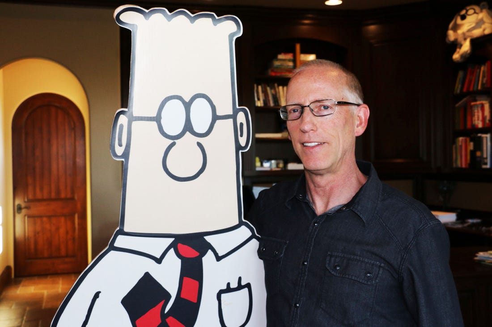
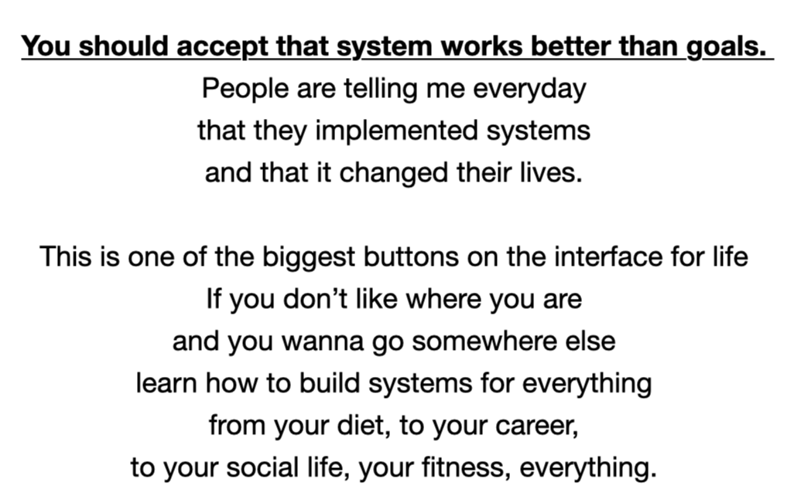
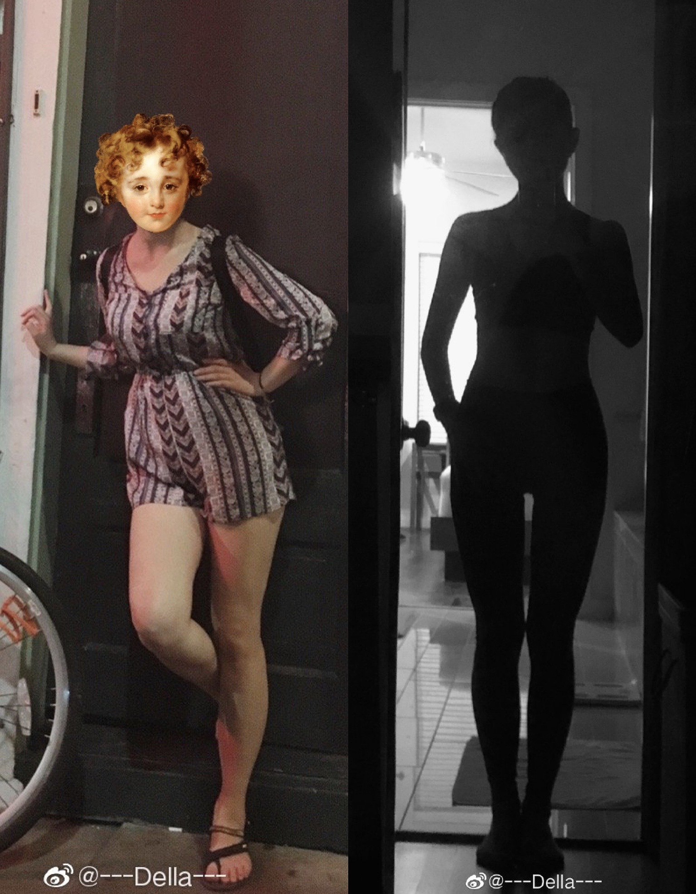
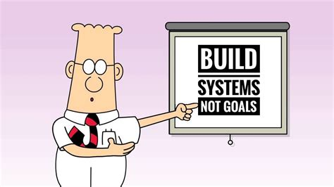
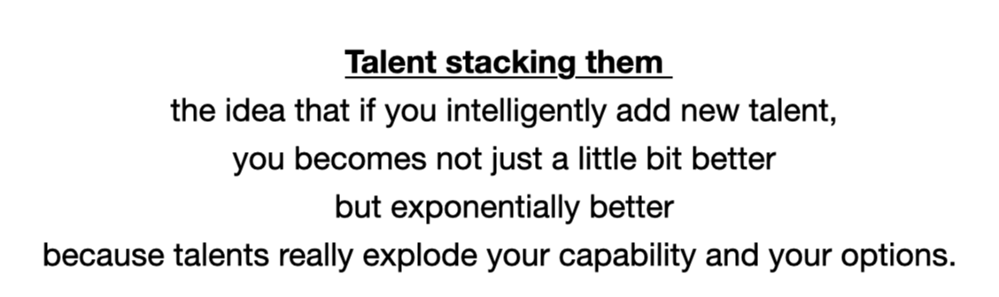
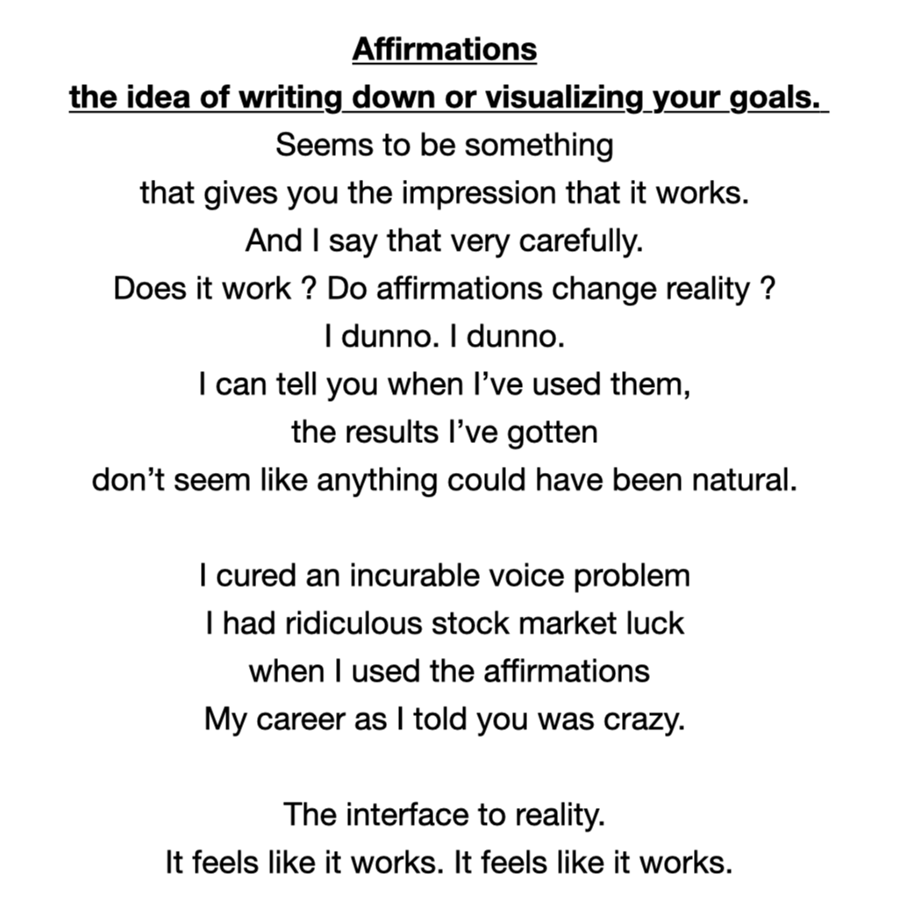
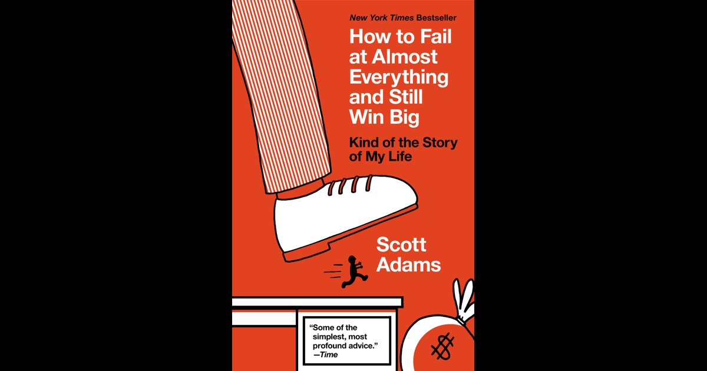

听写完这首rap，觉得自己有点不一样了 | It feels like it works


《It feels like it works》
这首说唱非常有趣，作者是 Akira The Don，而歌词素材取自 Scott Adams 在直播平台上的分享。 网上还没有歌词，我就每字每句听写发出来，也算是对两位创作者的支持。（可以在油管，Apple Music 和 Spotify 上找到这首歌）
Scott Adams 是谁？他是漫画家，作家，时事评论人，投资人，Influencer。  Scott Adams and Dilbert
他本人经历非常传奇。曾经两次职业发展受阻之后转行。（据他说是因为自己白人，公司要求管理层提高种族多样性，所以没办法继续晋升。）他在没有什么基础的情况下自学绘画，最后创作的连载漫画作品Dilbert大获成功，名利双收。
他得过失声症(Spasmodic Dysphonia)。刚开始被医生告知此病无解，之后想尽办法给自己创造好运，四年后通过实验性手术完全恢复。还没完，他在六十多岁的时候成功求婚小31岁的女友Kristina。
Kristina
好的，先不八卦了，聊聊这首rap。 这首歌里强调了三个非常重要的点，重要到我想要单独写一篇和你们分享。
系统 > 目标
You should accept that system works better than goals. 
如果想达成某个目标，不要奔着 goal 去，而是系统性改变自己的行为习惯。为了目标，重新建立一套系统，让系统有机地帮助我们达成目标，这个方法几乎适用于任何领域。 以自己减重30多斤为例。是的，我最重达到138斤，从小基本没怎么瘦过，个子比较高(172cm)，在人群中永远是最壮硕的。
 甩肉对比照
告别校园之后才开始慢慢变瘦。这段期间我没给自己下目标，说这个月瘦5斤，下个月瘦10斤之类的。反之，我很少称体重 (数字不重要，size比较重要)，告诉自己不能再胖下去了，必须瘦，接下来行为也发生系统性改变。
最直接的原因是开始自己做饭，没那么美味但是保证营养健康。也有可能一开始做得太难吃，完全不用担心 overeating。慢慢了解营养学知识，注重食物的nutrition label，戒掉奶茶(痛苦😖)，规律运动，少买零食等等，这一波系统性改变帮我甩掉了几十斤肥肉。
成功建立的行为系统不会那么脆弱，因为习惯已经改变，所有的行为自行运转，无需太多干预就能无意中达成甚至超过原有目标。
相反，如果无所不用其极，短期瘦身20斤，之后行为模式恢复到从前。短期是达成了目标，但可想而知反弹起来会多让人绝望。
很多瘦子，他们并不是天生的，而是无意中很多行为习惯避免他们成为胖子，比如吃饱就停，不爱吃油腻的等等。
 Dilbert
为达成目标而建立一套系统，效率远超随处给自己的便利贴。便利贴是短期的，会变化的，而系统是长期稳定，且内化的。
如何利用闲暇时间也是同理。由于时间是具有极强的排他性，同样的时间，当我选择去看书去健身，就没时间刷手机。如果成功构建起系统，那系统就会帮我们做选择，减少阻力。 与追求单一目标相比，选择建立好的行为习惯才是优势策略。
Talent Stacking
 简单粗暴的理解就是成为斜杠青年。在某个领域做到top 1% 非常棒，但是却非常难。做到某个领域top 20% 甚至10%，对很多人来说适当努力一下也不难实现。在多个 (实用) 领域都做到 top 10% 就能帮你解锁很多可能性，甚至让你变得独一无二。 比如我很喜欢的油管美妆大神Lisa Elfridge，她通过积累的人气已经成功推出了自己的彩妆线，还有关于makeup的书籍《Face Paint》 (买了还没翻完)。 她有哪些 talents 使她变成唯一呢？ Lisa Elfridge
- 化妆技术：不用说了，专业化妆师必备
- 商业经验：多次与一线大牌艺人合作
- 表达能力：把复杂美妆知识用简洁易懂的语言让观众理解
- 视频制作：高清专业的呈现，让她的视频更吸引人 大多数化妆师应该都具有前两项技能，少数人可以在这些技能上都做到精进。但 Lisa在这几项都是拔尖，这些 talents 综合起来也帮她成为了行业的唯一。
自我实现

Affirmation, the action or process of affirming something or being affirmed.
在这里我把它理解成“自我实现”，通过不断给自己正向激励，通过不断尝试更改变量来给自己创造好运，增加小概率事件发生的可能。 以 Scott 自己的失语症为例，他写道：
Just because no one has ever gotten better from Spasmodic Dysphonia before doesn’t mean I can’t be the first. So every day for months and months I tried new tricks to regain my voice.
I visualized speaking correctly and repeatedly told myself I could (affirmations). I used self hypnosis. I used voice therapy exercises. I spoke in higher pitches, or changing pitches.
I observed when my voice worked best and when it was worst and looked for patterns. I tried speaking in foreign accents. I tried “singing” some words that were especially hard.
”虽然医生说没人能从这个病症中恢复不代表我不会成为第一个“，在不能说话的那段时间，他尝试了所有可能的办法，从来没有放弃。所有靠谱的不靠谱的方法他都试过了，尽管一直没有好转，他内心一直告诉自己：I, Scott Adams, will speak perfectly. 当时所有医生都说无法治愈，可他一直没有放弃。最终通过Google关键词提醒，了解到日本有医生在做相关手术。他多方打听到在美国唯一一个做类似手术的医生，立马飞到对方城市问诊，然后预约了一个实验性的手术。患失语症四年多之后，他终于可以重新说话，获得新生。 他不断给自己正向激励，通过多种手段尝试解决问题。这里看起来是医疗技术的发展让他获益，但是如果他觉得自己无药可救，就不会去想办法收集相关信息，那么时代的恩惠也不会成为他的好运。
 How to Fail at almost everything but still win big Scott Adams 还有其他不可思议的经历，在《How to Fail at Almost Everything and Still Win Big》这本书里有详细聊到。比如说作为漫画家，他竟然有一阵子不能拿笔，拿起来笔手来就不自觉发抖，没法画任何东西。还好他最终都克服了这些问题，过程也非常有趣。 这也让我想到心理学家武志红，他曾说 你的潜意识引导你的人生”，一旦你相信了一个“事实”，你会把真实世界朝这你的“相信”方向去推动，以此来证明，你是对的。 武志红 他还举了自己的例子，作为从小农村长大的孩子但从不自卑，因为他从小就被父母给予很高的期望与肯定。 他也和父母一样，相信自己的出生是家族的福祉。之后他通过自己的努力考上北大，也从来没对自己的选择产生怀疑。这种自信，也是一种自我实现的预言。
好了，这首rap聊完了。 划重点
- 不断构筑有益习惯
- 解锁新技能
- 长期给自己正向暗示
但是“知道跟做到之间有着巨大的鸿沟”，我先努力践行，如果之后有成果再和大家汇报。 共勉。
公众号[Della在路上]